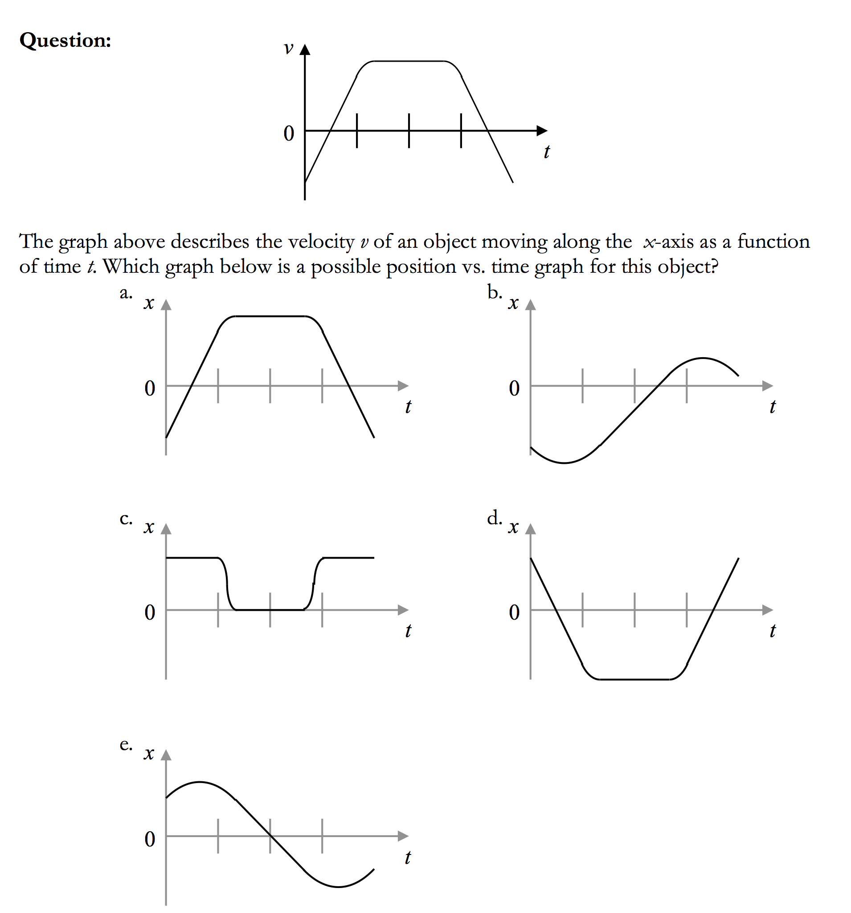
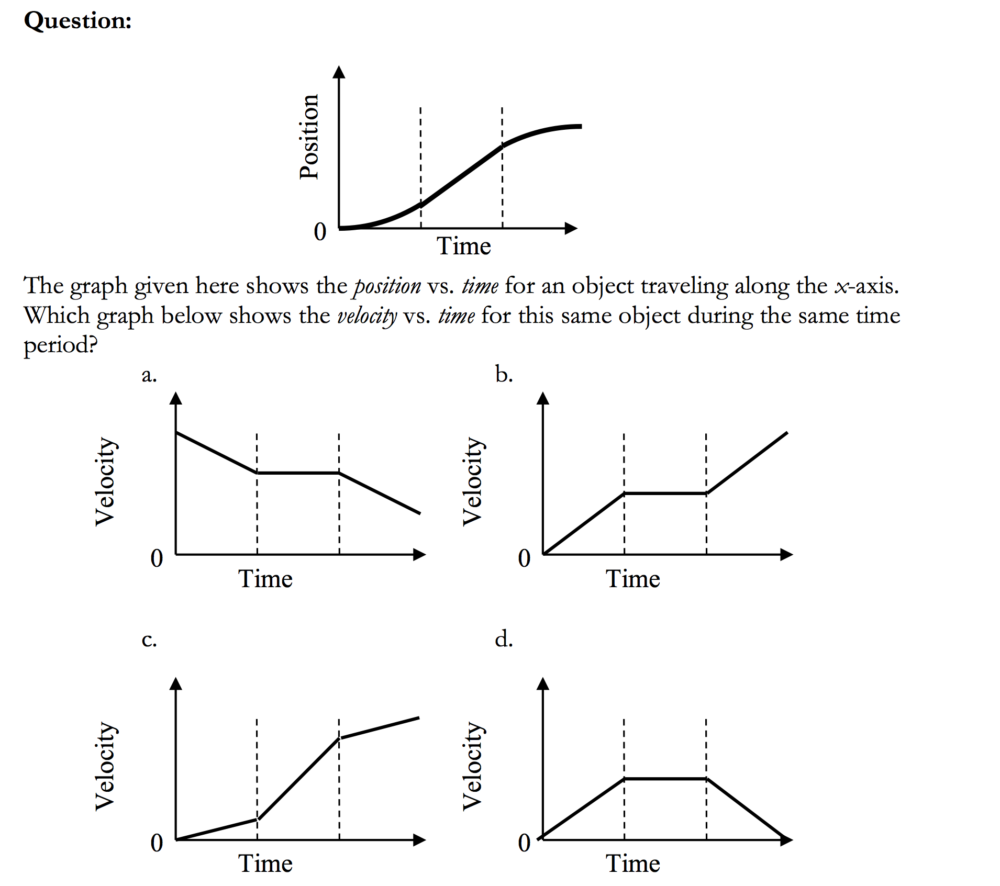

class: center, middle, inverse # AP Physics Daily Plans 2018-2019 ### *"Learning happens when you think hard"* ### *Make that Myelin* ### **Mastery Mindset** ### **\#ImpactLearning** --- #2019.04.14 AP Physics 1. Do Now 2. Finish Wave FRQ's (end time, halfway through class) 3. Static Electricty - Crash Course 4. Working with Coloumb's Law --- class:photoback background-image: url("https://media.wired.com/photos/5cadec1fb75f9b23c6466d74/master/w_582,c_limit/blackhole.jpg") #2019.04.12 AP Physics 1. Waves Quiz 1. Doppler Effect and Beats 2. Waves AP Questions: how do you want to structure this? - Speed Dating? - Partners and whiteboard circle? - Lab groups and present one problem at a time? - Lab groups, work at your group's pace and gallery walk towards the end of class? Next Week: 1. Quiz on Thursday - Standing Waves, I will post practice 2. Quiz on Friday - The People's Choice- Topic: class vote. What two things you *need* to review? Question on **classroom** for nominations. --- class:photoback background-image: url("https://media.wired.com/photos/5cadec1fb75f9b23c6466d74/master/w_582,c_limit/blackhole.jpg") #2019.04.11 AP Physics 1. Quiz 2. Finish Up Lab Discussion 3. Finish Wave notes and demos 4. AP FRQ Wave Practice --- class:photoback background-image: url("https://media.giphy.com/media/7xpbzE3cNI0Fy/giphy.gif") #2019.04.09 AP Physics 1. Standing waves 2. Resonance 3. Lab - Tube Resonance HW: 1. Quiz Thursday - Oscillation (Spring or Pendulum) 1. Quiz Friday - Waves 1. AP Practice Posted - Mandatory Pivot on standing waves (can get double time with a partner! So partner up!) --- class:photoback background-image: url("https://media.giphy.com/media/3nbxypT20Ulmo/giphy.gif") #2019.04.08 AP Physics 1. Set up tables in circle 1. Finish Interference Speed Dating 2. AP Waves Problems 13.4 and 13.4 3. Standing Waves and Resonance --- class:photoback background-image: url("https://media.giphy.com/media/1MayKbFuSKE1O/giphy.gif") #2019.04.05 AP Physics 1. Group Test: - 50 minutes with your group solving the problems - no pens or pencils allowed, only whiteboard and whiteboard markers - Erase Whiteboards - 30 minnutes Write your paragraph-length responses on your own. --- class: photoback background-image: url("https://media.giphy.com/media/fs5XxqsWALFNvP0At9/giphy.gif") #2019.04.03 AP Physics 1. Do now - page 267 Wave Rankings. (Change #4 to amplitude instead of `\(\lambda\)`) 1. **Hala-question**: What is your first memory? 2. Go Over Interference Pivot 3. Wave Notes 4. Interference Practice (13.2) - Problems stack vertically, rows correspond to clock readings - Page 268, t = 0, 1, 2, 3, 4 seconds - Page 269, t = 0, 2, 4, 5, 6 seconds - Page 270 draw when pulses fully overlap - Finally - extra copies of larger grids if you prefer or make am illegible mistake and need a new copy --- class:photoback background-image: url("https://media.giphy.com/media/3oz8xur099boo4N9aU/giphy.gif") #2019.04.02 - AP Physics 1. Hala-question: What is your ideal bagel? 2. Notes - wave descriptions 3. Measuring a Wave 4. Pivot: - What affects wave speed? - How are frequency and wavelength related? --- class:photoback background-image: url("https://media.giphy.com/media/3o6EhCosL6J4pgOhwI/source.gif") #2019.04.01 - AP Physics 1. Halaquist Question: "What is your least favorite condiment?" 1. AP Question (12.2) - Answer on whiteboard with group in one color (10 Minutes - timed!) - Go to next board, mark any differences, put your *different* solution *next* to it (5 minutes) - Go back to your original board, make any changes you think are necessary in a third color (5 minutes) - Go to new board, grade with rubric. (10 minutes) 2. Wave Definitions 2. Practicing with the Model (12.1) HW: 1. Physics Practice 1. Required Work: Waves Pivot 1. Group Test on Friday - Meet with group for 1/2 of class, write your responses for 1/2 of class --- class:photoback background-image: url("https://media.giphy.com/media/GAPl32g3hRmvu/source.gif") #2019.03.28 - AP Physics 1. Finish Board Meeting: - How does Amplitude affect `\(T_s\)` of the oscillating mass?? - How does mass affect `\(T_s\)`? - How does spring constant affect `\(T_s\)`? 2. Simple Harmonic Motion - Porter Notes 3. Practice with Simple Harmonic Motion - AP Questions - Oscillation Practice Questions - relating to our other models --- class:inverse #2019.03.26 - AP Physics 1. Halaquist Question of the day: ***"What is your favorite TV (or Netflix/Hulu) series?"*** 2. Tests: - Can start corrections today. - Due Monday. - I will go over some FRQ once everyone has taken the exam. 3. Homework - AP Practice - time to start prepping for the AP exam - Also time to start thinking about any reassessments you may want to sign up for 4. Finish Spring Lab 5. Oscillating Spring Board Meeting 6. Simple Harmonic Motion --- class:inverse #2019.03.20 1. Finish Nerf Dart Lab 2. Spring Oscillator Lab ###Some Definitions: - ***Oscillation*** - Repetitive variation over time (i.e. spring moving up and down, pendulum) - ***Period*** (`\(T\)`) - Time (usually measured in seconds) that it takes for one event of a repetitive motion. - ***Amplitude*** - Distance from the *equilibrium* point .center[ <img src="https://upload.wikimedia.org/wikipedia/commons/2/25/Animated-mass-spring.gif" width = "100px"/> ] --- class:inverse #2019.03.19 - New Lab Groups! .center[ <style type="text/css"> .tg {border-collapse:collapse;border-spacing:0;border-color: #ffffff;} .tg td{font-family:Arial, sans-serif;font-size:14px;padding:10px 5px;border-style:solid;border-width:1px;overflow:hidden;word-break:normal;border-color:#ffffff;} .tg th{font-family:Arial, sans-serif;font-size:14px;font-weight:normal;padding:10px 5px;border-style:solid;border-width:1px;overflow:hidden;word-break:normal;border-color:#ffffff;} .tg .tg-bi86{font-size:24px;font-family:"Trebuchet MS", Helvetica, sans-serif !important;;border-color: #ffffff;text-align:center;vertical-align:top} .tg .tg-rryl{font-weight:bold;font-size:26px;font-family:"Trebuchet MS", Helvetica, sans-serif !important;;border-color: #ffffff;text-align:center;vertical-align:top} </style> <table class="tg"> <tr> <th class="tg-rryl">Tigers</th> <th class="tg-rryl">Lions</th> <th class="tg-rryl">Wolves</th> <th class="tg-rryl">Jaguars</th> <th class="tg-rryl">Bears</th> <th class="tg-rryl">Cheetahs</th> </tr> <tr> <td class="tg-bi86">Emily Smith</td> <td class="tg-bi86">Natasha Strock</td> <td class="tg-bi86">Wayne Scott</td> <td class="tg-bi86">Lily Stephens</td> <td class="tg-bi86">Braden Flood</td> <td class="tg-bi86">Willow Coleda</td> </tr> <tr> <td class="tg-bi86">Jackson Sherwood</td> <td class="tg-bi86">Caleb Svingala</td> <td class="tg-bi86">Derek Rossetti</td> <td class="tg-bi86">Hannah Brewer</td> <td class="tg-bi86">Liam Hardaker</td> <td class="tg-bi86">James Miller</td> </tr> <tr> <td class="tg-bi86">Tim Wochinger</td> <td class="tg-bi86">Karsyn Berger</td> <td class="tg-bi86">Rebecca Roe</td> <td class="tg-bi86">Thatcher Deyoe</td> <td class="tg-bi86">Luc Charlebois</td> <td class="tg-bi86">Tari Civerolo</td> </tr> <tr> <td class="tg-bi86">Emily Burns</td> <td class="tg-bi86">Nick Janowski</td> <td class="tg-bi86">Eric Steffek</td> <td class="tg-bi86">Jenna Wilkinson</td> <td class="tg-bi86">Bryan Jacobs</td> <td class="tg-bi86"></td> </tr> </table> ] --- class:inverse #2019.03.19 AP Physics Miss Halaquist Question of the day: What is your silliest fear? 1. Test Thursday - Solutions for MC on practice are posted, free-response will be posted tonight - Solutions to packet questions are also posted on classroom 2. Ballistics Lab: - Goal: Determine the Muzzle Velocity of your dart. - This lab will review a lot of the physics you should know to date! - ***<u>Note</u>: If you shoot the nerf gun in a "non-physics manner" (open to determination by me and me only) you will be removed from the lab and will have to complete a separate assignment.*** --- #2019.03.14 AP Physics 1. Do Now 2. Compare answers to 5-7 from 10.4 3. Work on 10.5 in groups + go over 4. Go over 10.6 5. Start 10.7 - start with \#6 then go back to the beginning --- #2019.03.13 AP Physics 1. Quiz - Conservation of Momentum 1. Impulse - What is it? 2. Impulse Conceptual Problems 3. Impulse Problem Solving HW: 10.6 Multiple Choice Questions, #1 from 10.7 --- #2019.03.11 AP Physics 1. Energy Quiz 2. Changing Momentum Demo/Lab 3. Impulse - what is it? 4. Impulse Conceptual Problems 5. Impulse Problem Solving - Finish for HW Coming Up: - Quiz Wednesday on Conservation of Momentum - Quiz Friday on Impulse (and some more Conservation of Momentum) - <u>**Test** Next Thursday 3/21</u> - Focus on Energy and Momentum - but all physics covered is fair game --- ##2019.03.08 AP Physics .left-column-short[###🏀Hoops Against Hunger Tonight @ 7 PM!🏀 .center[<img src="G:\My Drive\GitHub\mrporterphysics.github.io\Daily Plan\porterhoopin.JPG" height = "350 px"/>] ] .right-column[ 1. Do Now 2. Go Over Quiz - No Scores for this quiz - Requiz on Monday ➡️ this one is going in the gradebook 3. Conservation of Momentum: - skip #3, and 4c - Ignore the Impulse Graph for now 4. Changing Momentum ] --- #2019.03.07 AP Physics 1. Energy Quiz 2. vISLE Devising a new physical quantity - Video 1: Velocity is conserved... - Video 2: Maybe mass matters? - Video 3: To Be Determined... 3. Testing our new physical quantity with a new isolated system (second Pivot) 4. Notes/Lecture on this new physical quantity 5. Conservation of p practice --- #2019.03.05 AP Physics 1. Do Now: - A 10-meter long, vertical cannon is used to accelerate a 1.0-kg ball straight up into the air. A constant force of 13.2 N is used to accelerate the bowling ball up the length of the cannon. What is the ball's approximate velocity as it leaves the cannon (assuming no energy loss to friction)? 2. 9.7 Compare with Group 3. 9.7 [Answers](https://secure-media.collegeboard.org/digitalServices/pdf/ap/ap15_physics_1_sg.pdf) 4. Blow Dart Pivot Discussion 5. vISLE 1) Devise a new physical quantity. Observational Experiments + Complete Part by Part and discuss as a class after each section - don't go ahead ([@JackSherwood](www.JackSherwood.com)) 6. vISLE 1) Testing whether physical quantity is constant for a new isolated system - Complete in groups + if we don't finish it will be homework HW: Energy Quiz Thursday --- #2019.03.04 AP Physics 1. Hand in Circ Motion 2. Whiteboard 9.4 in Lab Groups 3. Discuss 9.4 4. 9.6 - Complete on your own 5. Compare answers within lab group to 9.6 6. Look at AP Answer Key for 9.6 7. Repeat Steps 4-6 with 9.7 HW: Quiz Thursday On Energy --- #2019.02.27 AP Physics ####Today: 1. Quiz 2. Energy Problems in Packet work in groups, check with me 3. Hand Back Quizzes ####Friday: - I will not be here. You will be conducting a Pivot Video Analysis. ####HW - Due <u>Monday</u>: 1. Correct/Redo Circular Motion Quiz - Try to work with a partner or two... 2. 9.4 Curved Ramps --- #2019.02.26 AP Physics 1. Finish Pivot Video Problem 2. Whiteboard and Present Question & Solution 3. AP B Problem Solving (9.5) HW: Quiz Tomorrow on Energy Conservation...for real this time. --- #2019.02.25 AP Physics 1. Whiteboard Homework 2. Gallery Walk Homework Solutions 3. Questions on Homework 4. Pivot Video Problem 5. AP B Problem Solving (9.5) HW: Quiz Tomorrow on Energy Calculations and LOL Graphs --- ##2019.02.14 AP Physics 💕 .center[<a data-flickr-embed="true" href="https://www.flickr.com/photos/phyz/5432926646/in/album-72157625985944742/" title="Aristotle<3"><img src="https://farm6.staticflickr.com/5099/5432926646_53835050cf.jpg" width="387" height="500" alt="Aristotle<3"></a><script async src="//embedr.flickr.com/assets/client-code.js" charset="utf-8"></script>] --- ##2019.02.14 AP Physics 💕 .center[<a data-flickr-embed="true" href="https://www.flickr.com/photos/phyz/5420595982/in/album-72157625985944742/" title="Bohr<3"><img src="https://farm6.staticflickr.com/5299/5420595982_862530b377.jpg" width="386" height="500" alt="Bohr<3"></a><script async src="//embedr.flickr.com/assets/client-code.js" charset="utf-8"></script> ] --- ##2019.02.14 AP Physics 💕 .center[<a data-flickr-embed="true" href="https://www.flickr.com/photos/phyz/5430433092/in/album-72157625985944742/" title="Copernicus<3"><img src="https://farm6.staticflickr.com/5214/5430433092_10b8c5384d.jpg" width="500" height="386" alt="Copernicus<3"></a><script async src="//embedr.flickr.com/assets/client-code.js" charset="utf-8"></script> ] --- ##2019.02.14 AP Physics 💕 .center[<a data-flickr-embed="true" href="https://www.flickr.com/photos/phyz/5422196989/in/album-72157625985944742/" title="Curie<3"><img src="https://farm6.staticflickr.com/5176/5422196989_5519b5ed19.jpg" width="386" height="500" alt="Curie<3"></a><script async src="//embedr.flickr.com/assets/client-code.js" charset="utf-8"></script> ] --- ##2019.02.14 AP Physics 💕 .center[<a data-flickr-embed="true" href="https://www.flickr.com/photos/phyz/5438198362/in/album-72157625985944742/" title="Einstein<3"><img src="https://farm5.staticflickr.com/4146/5438198362_f3c5c06604.jpg" width="385" height="500" alt="Einstein<3"></a><script async src="//embedr.flickr.com/assets/client-code.js" charset="utf-8"></script> ] --- ##2019.02.14 AP Physics 💕 .center[<a data-flickr-embed="true" href="https://www.flickr.com/photos/phyz/5421432638/in/album-72157625985944742/" title="Heisenberg<3"><img src="https://farm6.staticflickr.com/5215/5421432638_b96d09631f.jpg" width="385" height="500" alt="Heisenberg<3"></a><script async src="//embedr.flickr.com/assets/client-code.js" charset="utf-8"></script> ] --- ##2019.02.14 AP Physics 💕 .center[<a data-flickr-embed="true" href="https://www.flickr.com/photos/phyz/5419991603/in/album-72157625985944742/" title="Kelvin<3"><img src="https://farm6.staticflickr.com/5096/5419991603_d2d04ae40b.jpg" width="390" height="500" alt="Kelvin<3"></a><script async src="//embedr.flickr.com/assets/client-code.js" charset="utf-8"></script> ] --- ##2019.02.14 AP Physics 💕 .center[<a data-flickr-embed="true" href="https://www.flickr.com/photos/phyz/5437125189/in/album-72157625985944742/" title="Kepler<3"><img src="https://farm5.staticflickr.com/4075/5437125189_ba71444e8a.jpg" width="383" height="500" alt="Kepler<3"></a><script async src="//embedr.flickr.com/assets/client-code.js" charset="utf-8"></script> ] --- ##2019.02.14 AP Physics 💕 .center[<a data-flickr-embed="true" href="https://www.flickr.com/photos/phyz/5436137772/in/album-72157625985944742/" title="Meitner<3"><img src="https://farm6.staticflickr.com/5179/5436137772_e3bfe0bebe.jpg" width="500" height="384" alt="Meitner<3"></a><script async src="//embedr.flickr.com/assets/client-code.js" charset="utf-8"></script> ] --- ##2019.02.14 AP Physics 💕 .center[<a data-flickr-embed="true" href="https://www.flickr.com/photos/phyz/5419991927/in/album-72157625985944742/" title="Newton<3"><img src="https://farm6.staticflickr.com/5018/5419991927_1cb426ede8.jpg" width="500" height="390" alt="Newton<3"></a><script async src="//embedr.flickr.com/assets/client-code.js" charset="utf-8"></script> ] --- ##2019.02.14 AP Physics 💕 .center[<a data-flickr-embed="true" href="https://www.flickr.com/photos/phyz/5421432954/in/album-72157625985944742/" title="Ohm<3"><img src="https://farm6.staticflickr.com/5291/5421432954_df60b9c92b.jpg" width="387" height="500" alt="Ohm<3"></a><script async src="//embedr.flickr.com/assets/client-code.js" charset="utf-8"></script> ] --- ##2019.02.14 AP Physics 💕 .center[<a data-flickr-embed="true" href="https://www.flickr.com/photos/phyz/5428905150/in/album-72157625985944742/" title="Planck<3"><img src="https://farm6.staticflickr.com/5256/5428905150_11bfe9df87.jpg" width="500" height="386" alt="Planck<3"></a><script async src="//embedr.flickr.com/assets/client-code.js" charset="utf-8"></script> ] --- ##2019.02.14 AP Physics 💕 .center[<a data-flickr-embed="true" href="https://www.flickr.com/photos/phyz/5419992677/in/album-72157625985944742/" title="Sagan<3"><img src="https://farm6.staticflickr.com/5059/5419992677_5d87847a31.jpg" width="386" height="500" alt="Sagan<3"></a><script async src="//embedr.flickr.com/assets/client-code.js" charset="utf-8"></script> ] --- #2019.02.14 AP Physics 💕 .center[<a data-flickr-embed="true" href="https://www.flickr.com/photos/phyz/5419993031/in/album-72157625985944742/" title="Tesla<3"><img src="https://farm6.staticflickr.com/5254/5419993031_ba77a5be9c.jpg" width="500" height="387" alt="Tesla<3"></a><script async src="//embedr.flickr.com/assets/client-code.js" charset="utf-8"></script> ] --- ##2019.02.14 AP Physics 💕 .center[<img src="https://www.symmetrymagazine.org/sites/default/files/styles/2015_inset_one/public/images/standard/Inline_Valentine_1.jpg?itok=7ulAmnvQ" width = "900px"/>] --- ##2019.02.14 AP Physics 💕 .center[<img src="https://www.symmetrymagazine.org/sites/default/files/styles/2015_inset_one/public/images/standard/Inline_Valentine_2.jpg?itok=86upbsAH" width = "900px"/>] --- ##2019.02.14 AP Physics 💕 .center[<img src="https://www.symmetrymagazine.org/sites/default/files/styles/2015_inset_one/public/images/standard/Inline_Valentine_3.jpg?itok=0wfu0miw" width = "900px"/>] --- ##2019.02.14 AP Physics 💕 .center[<img src="https://www.symmetrymagazine.org/sites/default/files/styles/2015_inset_one/public/images/standard/Inline_Valentine_4.jpg?itok=OJq3Mb-r" width = "900px"/>] --- ##2019.02.14 AP Physics 💕 .center[<img src="https://www.symmetrymagazine.org/sites/default/files/styles/2015_inset_one/public/images/standard/Inline_Valentine_5.jpg?itok=I6ygAqQd" width = "900px"/>] --- ##2019.02.14 AP Physics 💕 .center[<img src="https://www.symmetrymagazine.org/sites/default/files/styles/2015_inset_one/public/images/standard/Physics_love_poems_2.png?itok=cJBFcLY2" width = "900px"/>] --- ##2019.02.14 AP Physics 💕 .center[<img src="https://www.symmetrymagazine.org/sites/default/files/styles/2015_inset_one/public/images/standard/Physics_love_poems_3.png?itok=T4wt-ne-" width = "900px"/>] --- ##2019.02.14 AP Physics 💕 .center[<img src="https://www.symmetrymagazine.org/sites/default/files/styles/2015_inset_one/public/images/standard/Physics_love_poems_4.png?itok=4k3NAfI1" width = "900px"/>] --- ##2019.02.14 AP Physics 💕 1. Physics Valentines 2. Circular Motion Quiz 3. When done with quiz finish energy LOL Diagrams 4. Whiteboard LOLs 5. Energy Calculations --- #2019.02.13 AP Physics 1. Do Now 2. Review/Finish LOL Diagram Introduction 3. LOL Diagram Practice in Groups: - You will be assigned a problem to whiteboard and explain as a group 4. Board Meeting Answers to Problems 5. If time - go over circular motion problems, if not I will post solutions with explanations -- you can email me questions Tomorrow: Quiz on circular motion problem --- #2019.02.12 AP Physics 1. Do Now 2. Energy Definitions 3. Work-Energy Theorem and Energy Conservation 4. LOL Diagrams 5. Check Homework Questions - If time, if not check tomorrow --- #2019.02.08 AP Physics 1. Quiz - Projectiles 2. Wrap up Circular Motion - AP Question (page 187) - Work on this when you finish your quiz, compare to your group when everyone is finished with the quiz. 3. Board Meeting - Spring Launcher Lab. On your whiteboard: - Graph, equation of linear model (after linearized) - Determine units for slope - Is the vertical intercept (y intercept) negligible or non-negligible? - Overall goal: what is the mathematical relationship between speed and energy? 4. Types of energy definitions 5. Conservation of Energy --- #2019.02.07 AP Physics - Do Now ###For each prompt below, give a brief but specific description. Use normal, everyday language, without technical terms. In particular, do not use the words *positive* or *negative* 1. Describe an object that has zero velocity and zero acceleration. 2. Describe an object that hsa nonzero velocity and zero acceleration. 3. Describe an object that has zero velocity and nonzero acceleration. 4. Describe an object that has nonzero velocity and nonzero acceleration. --- #2019.02.07 AP Physics - Agenda 1. Do Now 2. Redo area calculation and measure launch speed. 3. Discuss meaning of the area of a force vs. displacement graph 4. Lab - Cart Speed and Area **Tomorrow: Review quiz on Projectile Motion.** **We will also finish Circ. Motion and Universal Law of Gravitation** --- #Cart Launch - What graph attributes have we tried? <iframe src="https://www.desmos.com/calculator/anyry0pwr7?embed" width="1000px" height="500px" style="border: 1px solid #ccc" frameborder=0></iframe> --- #Cart Launch - Force vs. Displacement Graph -- - What is the equation for area (for this specific force vs. displacement graph)? -- + `\(Area = \frac{1}{2}k\Delta x^2\)` -- - What are the units for area: -- + N`\(\cdot\)`m -- - What does this area describe? What did it allow us to determine? -- - Would we have gotten the same velocity if we used different masses? Why or why not? Test it. --- #Cart Launch - Force vs. Displacement Graph - *Area* of the Force vs. Displacement graph is the energy that the spring "gives" to the cart system. We call this the ***Work*** that the spring does on the cart system. -- - For *hookean springs* the equation for this work is: `\(W = \frac{1}{2}k\Delta x^2\)` -- - We cannot use forces to predict the final velocity of the cart because of the non-uniform acceleration -- - The energy that the cart has is its ***Kinetic Energy*** or energy in motion --- #Lab - Work and speed ###Develop and carry out an experiment that will determine the relationship between the **Work** that the spring does on the cart system and the resulting velocity that the cart gains. --- ***2019.02.06 AP Physics - Do Now:*** 11 identical springs are stretched with a mass different distances and held in place with a string. The string is cut and the springs oscillate (move up and down repeatedly). .center[<img src="G:\My Drive\GitHub\mrporterphysics.github.io\Daily Plan\springs_ranking.png" width = "700px"/>] Rank from greatest to least: (1) The spring force on each mass at rest, (2) the speed through the equilibrium point (dotted line) and (3) the period of oscillation (time for one up and down). --- #2019.02.06 AP Physics - Agenda ####Today's theme: "Ever tried. Every failed. No matter. Try again. Fail again. Fail better." - Samuel Beckett 1. Do Now 2. Hooke's Law Experiment: - Develop and carry out a procedure to determine the spring constant of your hoop spring 3. Cart Launching Experiment and Class Demonstration: - *How can we launch our carts of equal mass with the same velocity using our different springs?* 4. Lab - Cart Speed and Spring Launchers **HW: Midterm Corrections Due Friday!** --- #Hooke's Law Lab: Develop an experiment to determine the spring constant of your hoop spring. Record your results in Pivot. Add you spring constant to the board so we can compare to your peers. --- #Cart Launch Brainstorm a method for ***all*** groups to launch their carts at the same speed and measure the results. Consider: - What distance will you compress your spring? Why/how will you determine this distance? - How can we measure the launch speed? With what tools? What analysis do we need to do to the data? --- #2019.02.04 AP Physics ##New Lab Groups <style type="text/css"> .tg {border-collapse:collapse;border-spacing:0;} .tg td{font-family:Arial, sans-serif;font-size:14px;padding:10px 5px;border-style:solid;border-width:1px;overflow:hidden;word-break:normal;border-color:black;} .tg th{font-family:Arial, sans-serif;font-size:14px;font-weight:normal;padding:10px 5px;border-style:solid;border-width:1px;overflow:hidden;word-break:normal;border-color:black;} .tg .tg-18cy{font-weight:bold;font-size:22px;background-color:#9b9b9b;border-color:inherit;text-align:left;vertical-align:top} .tg .tg-fhuz{font-size:22px;background-color:#efefef;border-color:inherit;text-align:left;vertical-align:top} </style> <table class="tg"> <tr> <th class="tg-18cy">Hawks</th> <th class="tg-18cy">Eagles</th> <th class="tg-18cy">Kites</th> <th class="tg-18cy">Ospreys</th> <th class="tg-18cy">Falcons</th> <th class="tg-18cy">Buzzards</th> </tr> <tr> <td class="tg-fhuz">Willow Coleda</td> <td class="tg-fhuz">Rebecca Roe</td> <td class="tg-fhuz">Thatcher Deyoe</td> <td class="tg-fhuz">Derek Rossetti</td> <td class="tg-fhuz">Timothy Wochinger</td> <td class="tg-fhuz">Lillian Stephens</td> </tr> <tr> <td class="tg-fhuz">Natasha Strock</td> <td class="tg-fhuz">Nick Janowski</td> <td class="tg-fhuz">Bryan Jacobs</td> <td class="tg-fhuz">Jenna Wilkinson</td> <td class="tg-fhuz">Eric Steffek</td> <td class="tg-fhuz">Luc Charlebois</td> </tr> <tr> <td class="tg-fhuz">Liam Hardaker</td> <td class="tg-fhuz">Hannah Brewer</td> <td class="tg-fhuz">Jackson Sherwood</td> <td class="tg-fhuz">James Miller</td> <td class="tg-fhuz">Tari Civerolo</td> <td class="tg-fhuz">Caleb Svingala</td> </tr> <tr> <td class="tg-fhuz">Wayne Scott</td> <td class="tg-fhuz">Emily Burns</td> <td class="tg-fhuz">Emily Smith</td> <td class="tg-fhuz">Karsyn Berger</td> <td class="tg-fhuz">Braden Flood</td> <td class="tg-fhuz"></td> </tr> </table> --- #2019.02.04 AP Physics 1. Do Now 2. Universal Law of Gravitation: `\(F_g = \frac{Gm_1m_2}{r^2}\)` 3. 8.4 Circular Motion Orbits 4. 8.5 Applying Circular Motion Problems (AP Type Questions) **Quiz Thursday on Circular Motion Questions** --- #2019.02.01 AP Physics 1. Do Now 2. Flying Pigs 3. Solving Circular Motion Problems - Circular Motion Problem Solving (8.3) - Applying Circular Motion (#1-3) (8.5) 4. Orbital Motion and ULG **HW:** - Monday: Circular Motion Quiz - Monday: Finish --- #2019.01.30 AP Physics 1. Do Now 2. Lab Experiment for Midterm Question 2. Look at Midterm FRQ 3. Solving Circular Motion Problems 4. Flying Pig Lab 5. Start Packet Questions --- #2019.01.28 AP Physics 1. Pick Your Lab Group...for *just* this **one** week. 2. Do Now: 8.2 #1 and 2a+b (stop at 2c) 3. Some Definitions: - Tangential Velocity/Speed, Angular Velocity/Speed, Centripetal Force, Radial Force 3. Pivot Lab with your group - "Exploring Forces in Circular Motion" 4. Whiteboard results 5. Board Meeting --- #2019.01.17 AP Physics 1. Quiz 2. Projectile Motion Pivot in lab groups - can solve on whiteboard and upload photo to show work 3. Depending on time: Multiple Choice Practice with Plickers **Notes**: - I will post review materials for the midterm on classroom. I will be in the "Classwork" Tab under "Exam Review" --- #2019.01.16 AP Physics 1. Projectile Motion Quiz 2. When you finish the quiz complete 7.7 on your own in your packet 3. Look at the grading rubric for 7.7 - score yourself 4. 7.5 and 7.6 in the packet **Tomorrow** - Forces Quiz (systems like last weeks quiz) --- #2019.01.15 AP Physics 1. Go over paragraph response quiz - No grade is going in the gradebook - Rewrite your paragraph. Be ***SPECIFIC*** about the physics and ***ALL*** of the physics! 2. Projectiles at an angle: - Play with Phet Simulator - What angle(s) give you the greatest range? Determine and explain why - What angle(s) give you the greatest hang time? Why? - What angles give the same range for the same initial velocity (and no height?)? Why? - Whiteboard the above responses 3. Problem-solving Projectile Motion Problems: - 7.7 FRQ on your own, we will grade - Finish 7.4 and 7.5 for homework - 7.6 is good exam review - **Quiz on Projectile Motion Tomorrow** - **Quiz on Forces and Systems Thursday** --- #Paragraph Length Response: In trial 2 the heavier ball will land a distance less than `\(d\)` from the table. Increasing the mass of the ball will decrease the acceleration of the system despite having the same net force as trial 1. Increasing mass with the same net force decreases acceleration because of the inverse mass-acceleration relationship in Newton's Second Law (`\(a = \frac{\Sigma F}{m}\)`). With a smaller acceleration the ball will accelerate to a lesser velocity after traveling a distance `\(\Delta x\)`. This lesser velocity gives a smaller launch velocity when the cart hits the bumper. The range is determined with `\(x = vt\)` so decreasing the velocity will decrease the range because the ball is in the air the same amount of time for both trial 1 and 2. --- #2019.01.11 AP Physics 1. Ranking Task: Horizontal Range 1. Review Horizontal Projectile HW 1. Group Problem Solving - AP likes to ask: "Trial 1 has these original conditions. In Trial 2 we change ***this one thing*** what changes result from that change?" - So what could you change about this situation and what effects would that have? 2. Quiz: Paragraph Length Response 3. Projectiles at an angle --- #2019.01.10 AP Physics 1. Check answers to homework with lab group. Compare and contrast, come up with a list of questions you have 2. Answer Questions on Homework 3. Horizontally Fired Projectile Ranking Tast (I know out of order in the packet...) 4. How to solve Horizontally Fired Projectile Problems 5. Solving Projectile Problems --- #2019.01.09 AP Physics - New Groups! <style type="text/css"> .tg {border-collapse:collapse;border-spacing:0;} .tg td{font-family:Arial, sans-serif;font-size:14px;padding:10px 5px;border-style:solid;border-width:1px;overflow:hidden;word-break:normal;border-color:black;} .tg th{font-family:Arial, sans-serif;font-size:14px;font-weight:normal;padding:10px 5px;border-style:solid;border-width:1px;overflow:hidden;word-break:normal;border-color:black;} .tg .tg-9u25{font-weight:bold;font-size:22px;background-color:#9b9b9b;text-align:left;vertical-align:top} .tg .tg-il2e{font-size:22px;background-color:#efefef;text-align:left;vertical-align:top} </style> <table class="tg"> <tr> <th class="tg-9u25">Zeus</th> <th class="tg-9u25">Athena</th> <th class="tg-9u25">Hera</th> <th class="tg-9u25">Hermes</th> <th class="tg-9u25">Artemis</th> <th class="tg-9u25">Apollo</th> </tr> <tr> <td class="tg-il2e">Jack Sherwood</td> <td class="tg-il2e">Liam Hardaker</td> <td class="tg-il2e">Emily Smith</td> <td class="tg-il2e">Derek Rossetti</td> <td class="tg-il2e">Eric Steffek</td> <td class="tg-il2e">Tari Civerolo</td> </tr> <tr> <td class="tg-il2e">Thatcher Deyoe</td> <td class="tg-il2e">Lily Stephens</td> <td class="tg-il2e">Karsyn Berger</td> <td class="tg-il2e">Braden Flood</td> <td class="tg-il2e">Timothy Wochinger</td> <td class="tg-il2e">Natasha Strock</td> </tr> <tr> <td class="tg-il2e">James Miller</td> <td class="tg-il2e">Hannah Brewer</td> <td class="tg-il2e">Caleb Svingala</td> <td class="tg-il2e">Willow Coleda</td> <td class="tg-il2e">Luc Charlebois</td> <td class="tg-il2e">Bryan Jacobs</td> </tr> <tr> <td class="tg-il2e"></td> <td class="tg-il2e">Wayne Scott</td> <td class="tg-il2e">Emily Burns</td> <td class="tg-il2e">Rebecca Roe</td> <td class="tg-il2e">Nick Janowski</td> <td class="tg-il2e">Jenna Wilkinson</td> </tr> </table> 1. Quiz 2. Board Meeting Pivot - discuss in your group, summarize findings on whiteboard 3. Freefall Problems 4. Horizontal Projectiles HW: - Another Forces Quiz Friday - look at problems we didn't finish in the packet - Individual Test Corrections due Friday (everyone has to do them to earn the points!) --- #2019.01.07 AP Physics 1. Sit in groups from group test (old lab groups) 1. AP Problem in packet 2. Go over 6.5 (each group will whiteboard and present one of the problems) 3. Group Exam Test Corrections: - The mistake (conceptual, careless, calculation) and ***why*** you made that mistake - The correct solution HW: - Quiz Wednesday on forces, expect an accelerating system question - Pivot Assignment on Projectile due for class --- #2019.01.04 AP Physics 1. Sit anywhere (back to old groups Monday, new groups Wednesday) 1. Discuss Collisions Lab 2. 6.3 Accelerating Systems (pages 143-145) - Whiteboard Answers and compare 3. 6.5 More Practice #1-6, skip #4 4. 6.6 AP FRQ Practice, Block System question 5. 6.4 Multiple Choice Practice, and #4 from 6.5 Coming Up... - Next class we will go over the group test - Wednesday Forces Quiz, expect an accelerating system question --- #2019.01.03 AP Physics 1. ***Sit anywhere (for today)...*** don't make me regret this decision 2. Plicker Questions (take out your plicker) - Answer the question on your own first, then you can compare to your peers 3. Pivot Interactive: ***How does the force of cart A on cart B compare to the force of cart B on cart A?*** - complete with a partner - whiteboard results as a group - mini board meeting 4. Solving System force problems Schedue until Midterms: - Week of 1/2: Finish forces, will go over group test tomorrow 1/4 - Week of 1/7: Projectile Motion - Week of 1/13: Circular Motion and Universal Law of Gravitation - Week of 1/22: Midterms - (You are 1/24 from 8 am - 11 am) - I will have a review packet for you at some point next week --- #2018.12.20 AP Physics ##Group Test - ####Hand in one copy of the exam - recycle the other copies (I will copy the exam and put a copy in each of your folders) - ####When you hand in the paper copy, complete the last question (pivot question) as a group - only one person needs to submit this - ####You can use a whiteboard to work out the problems together, but angle your board so other groups cannot see it (or use a flat board to put on your desks) --- #2018.12.19 AP Physics 1. Do Now Problem (should be on your table) 2. \#9-13 in packet - I will cut you off at some point with these - I will also post the answers to these problems after school 3. Solving problems with systems ###Group Exam Tomorrow - Will work with lab groups - Good Practice: - 5.11 Algebraic Problem Solving - AP Style (p. 122) - 5.12 TIPER Questions (p. 125) - 6.4 AP MC Practice (p. 146) - 6.5 More Practice (p. 148) (ignore question 9...forgot to delete) --- #2018.12.17 AP Physics 1. Friction Problem (Page 117) - Solve with your group, whiteboard responses - Go compare class answers - Score according to the AP Rubric 2. Finish Net Force Questions - Gallery Walk Answers ***HW:*** 1. Algebraic Problem Solving Force Questions (p. 122-124) - Draw FBD - Write Force Equation (`\(\Sigma F_x = 0\)`, `\(\Sigma F_y = 0\)`, `\(\Sigma F_x = ma_x\)`, `\(\Sigma F_y = ma_x\)`) - Sub in values and force equations, i.e. `\(m\)`, `\(mg\)`, `\(F\cos\theta\)`, `\(\mu F_N\)`, etc 2. Group assessment Thursday, you will work with your current lab table --- #2018.12.14 AP Physics 1. Quick Notes on Friction: - What affects it? - What is the difference between Kinetic and Static? 2. Pivot Lab Board Meeting: - ***How do mass and force affect the acceleration of an object*** - Discuss with your group the experiments you ran look for commonalities and questions - Whiteboard the process and product of your experiments. What did you do and what discoveries did that lead to? - Consider: How would the results change if there was friction on the glider? 3. Elevator Problems HW: Finish N2L Questions in packet (pages 136-142) - Ignore "vector addition diagram" you do not have to do them. [Sorry I forgot to delete them from the packet...] --- #2018.12.13 AP Physics 1. Quiz 2. Force Problems 3. Friction --- #Do Now Rank the following situations from greatest spring force to least spring force on the block. <img src="G:\My Drive\GitHub\mrporterphysics.github.io\Daily Plan\Oscblocks.jpg" width="1000px"/> --- #2018.12.11 AP Physics 1. How to solve force problems with components 2. Solving Force Problems HW: 1. Quiz next class on identifying forces, using `\(\vec{F}_g = m\vec{g}\)`, and drawing FBDs: .small-list[ - BFPM 1. I can represent vectors in diagrams or mathematically by appropriately labeled the vectors with magnitude, direction, and units during the analysis of a situation. - BFPM 2. I can explain contact forces (tension, friction, normal, spring) as arising from interatomic electric forces and that they therefore have certain directions. - BFPM 3. I know the difference between mass and weight and I can apply `\(\vec{F}_g = m\vec{g}\)` to calculate the gravitational force on an object with mass m in a gravitational field of strength `\(\vec{g}\)` in the context of the effects of a net force on objects and systems. - BFPM 4. I can identify forces and I can create and use free-body diagrams to analyze physical situations to solve problems with motion qualitatively and quantitatively. ] 2. ***DUE FRIDAY*** Flipped Lab Pivot: You must have this complete for Friday for class to participate. If you do not have it finished *entirely* for class you will get a 0 for the lab and will no be participating. --- #2018.12.10 AP Physics 1. Finish Labs 2. Whiteboard results for both labs 3. Board Meeting 4. Solving force problems with numbers: - Sum the Forces in each direction. - If CV ⇨ Forces are balanced ⇨ `\(\Sigma F = 0\)` - Write this algebraic formula, then substitue, and then solve. (Trust me, this will seem tedious now, but will help in the long run) - Be sure to pick a coordinate system (which directions are (+) which are (-)) - If necessary split forces at an angle into their components --- #2018.12.07 AP Physics 1. Do Now (should be on desk) 2. Force Labs 3. Force Labs Board Meetings - How does stretch relate to the spring force? - How does mass relate to the force of Earth's gravity? --- #2018.12.05 AP Physics 1. Finish Question 5 and 6 on box question - check group answer with me. 2. Free Body Diagram Review -- gallery walk - Compare answers with lab table, 🌟 ones that are different - With a partner, whiteboard 1-2 assigned problems from homework. 3. Labs: `\(\vec{F}_s\)` and `\(\vec{F}_g\)` - Complete Spring Force Lab First - Use information about your spring to design the gravity lab. (Use your spring as the "force sensor" for the gravity lab.) HW: Finish and data analysis and follow up questions from the labs. --- #2018.12.04 AP Physics 1. Box Problem 2. Review HW FBDs 3. Finish FBDs with motion (Complete for homework if not done in class) --- #2018.12.03 AP Physics 1. Do Now: - (Without looking at your notes) Write what the **Normal Force** is and why it occurs. 2. Finish Diagrams for Interaction Stations - Whiteboard your station 3. *The Box Problem* HW: Attempt Free body diagrams in packet (do in pencil!) -- I can print extra copies if you want to copy do the correct answers later (or just copy over in a different colored pen to show your thinking) --- #2018.11.29 AP Physics 1. Do Now: - *List as many forces as you can think of and provide a situation that shows that force occurring*. (Do on a piece of scrap paper) 2. Types of Forces and Force Definitions (Notes in packet) 3. Interaction Diagrams and Free-Body Diagrams (Notes in packet) 4. Diagram the interaction stations 5. Forces and Motion: **The Sliding Box Problem** --- #2018.11.28 AP Physics 1. Discuss Bowling Ball Lab Results - What patterns do you notice? - How do the mallet taps affect the motion of the bowling ball? - How do the interactions between the bowling ball and the mallet result in constant velocity or constant acceleration models for the bowling ball's motion? 2. What is a force? 3. Interaction Stations 4. Name the forces --- #Lab Groups - Forces .center[ <style type="text/css"> .tg {border-collapse:collapse;border-spacing:0;} .tg td{font-family:Arial, sans-serif;font-size:28px;padding:10px 5px;border-style:solid;border-width:1px;overflow:hidden;word-break:normal;border-color:black;} .tg th{font-family:Arial, sans-serif;font-size:28px;font-weight:normal;padding:10px 5px;border-style:solid;border-width:1px;overflow:hidden;word-break:normal;border-color:black;} .tg .tg-kiyi{font-weight:bold;border-color:inherit;text-align:left} .tg .tg-opep{font-weight:bold;font-size:32px;font-family:"Lucida Console", Monaco, monospace !important;;border-color:inherit;text-align:left;vertical-align:top} .tg .tg-fymr{font-weight:bold;border-color:inherit;text-align:left;vertical-align:top} .tg .tg-xldj{border-color:inherit;text-align:left} .tg .tg-0pky{border-color:inherit;text-align:left;vertical-align:top} </style> <table class="tg"> <tr> <th class="tg-kiyi">Knights</th> <th class="tg-kiyi">Spartans</th> <th class="tg-kiyi">Ninjas</th> <th class="tg-fymr">Vikings</th> <th class="tg-fymr">Samurai</th> <th class="tg-fymr">Legionaires</th> </tr> <tr> <td class="tg-xldj">Braden</td> <td class="tg-xldj">Emily B</td> <td class="tg-xldj">Thatcher</td> <td class="tg-0pky">Karsyn</td> <td class="tg-0pky">James</td> <td class="tg-0pky">Wayne</td> </tr> <tr> <td class="tg-xldj">Jenna</td> <td class="tg-xldj">Hannah</td> <td class="tg-xldj">Bryan</td> <td class="tg-0pky">Rebecca</td> <td class="tg-0pky">Tari</td> <td class="tg-0pky">Jack</td> </tr> <tr> <td class="tg-xldj">Natasha</td> <td class="tg-xldj">Nick</td> <td class="tg-xldj">Lily</td> <td class="tg-0pky">Tim</td> <td class="tg-0pky">Derek</td> <td class="tg-0pky">Caleb</td> </tr> <tr> <td class="tg-xldj">Luc</td> <td class="tg-xldj">Willow</td> <td class="tg-xldj">Emily S</td> <td class="tg-0pky">Liam</td> <td class="tg-0pky"></td> <td class="tg-opep"></td> </tr> </table> ] --- #2018.11.27 AP Physics .left-column-short[ <style type="text/css"> .tg {border-collapse:collapse;border-spacing:0;} .tg td{font-family:Ubuntu Mono, sans-serif;font-size:24px;padding:10px 5px;border-style:solid;border-width:1px;overflow:hidden;word-break:normal;border-color:black;} .tg th{font-family:Ubuntu Mono, sans-serif;font-size:24px;font-weight:normal;padding:10px 5px;border-style:solid;border-width:1px;overflow:hidden;word-break:normal;border-color:black;} .tg .tg-s268{text-align:left} .tg .tg-0lax{text-align:left;vertical-align:top} </style> <table class="tg"> <tr> <th class="tg-s268">Block</th> <th class="tg-s268">Start Time</th> <th class="tg-s268">End Time</th> </tr> <tr> <td class="tg-s268">1</td> <td class="tg-s268">9:40</td> <td class="tg-s268">10:36</td> </tr> <tr> <td class="tg-s268">2</td> <td class="tg-s268">10:39</td> <td class="tg-s268">11:35</td> </tr> <tr> <td class="tg-s268">A Lunch</td> <td class="tg-s268">11:38</td> <td class="tg-s268">11:58</td> </tr> <tr> <td class="tg-0lax">3</td> <td class="tg-0lax">12:01</td> <td class="tg-0lax">12:57</td> </tr> <tr> <td class="tg-0lax">4</td> <td class="tg-0lax">1:00</td> <td class="tg-0lax">1:55</td> </tr> </table> ] .right-column-long[ 1. Bowling Ball Physics: - Essential Questions: ***How do you change the motion of the bowling ball? How do you keep the motion of the bowling ball constant?*** 2. Board Meeting Results: - What patterns do you notice? - How do the mallet taps affect the motion of the bowling ball? - How do the interactions between the bowling ball and the mallet result in constant velocity or constant acceleration models for the bowling ball's motion? ] --- #2018.11.19 AP Physics ##Test Today 1. Seated alphabetically 2. 20 MC, last two (19 and 20 you need to select <u>TWO</u> answers) 3. 2 Free Response --- #2018.11.14 AP Physics 1. Lab Practical 2. Paragraph Length Response question 3. Your time to study for Friday's exam --- #2018.11.13 AP Physics 1. Plicker Questions 2. Ranking Task - Finish on whiteboard with group BEFORE writing in your packet 3. Paragraph Length Response **Reminders:** - Test Friday: 20 MC, 20 Points of Free Response (2-3 questions with multiple parts) - You can check review packet answers with me, I will <u>NOT</u> be posting them. - Tomorrow you will have some time to complete the review packet in class. --- background-image: url("vt graphs cars.png") --- background-image: url("vtbillard.png") --- class:middle,center  --- class:middle,center  --- #2018.11.07 AP Physics 1. Do Now Questions 2. Review Problem Solving with Graphs - Gallery Walk 3. Problem Solving with equations 4. Problems 11 and 12 Coming Up: - Tuesday - group work challenge problem - Wednesday - AP Review Questions (from review packet) - Friday - Exam - 20 MC, 2 FRQs one experimental design question. --- In each case shown, someone is running on a flatbed train car as the train moves. In cases C and D, the person is running toward the front of the train, while in cases A and B the person is running toward the rear. The speeds of the train and of each person relative to the train are given. An observer is standing beside the track watching each train go by. .center[<img src="Trainrank.jpg" width ="500"/>] **Rank the *speed* of the runners relative to the observer standing beside the tracks.** **A.** (C>A>B=D) **B.** (C > B = A > A) **C.** (B>A>C>D) **D.** (C>B>A>D) --- .center[<img src="vtoscillation.PNG" width = "700"/>] A student sets an object attached to a spring into oscillatory motion and uses a motion detector to record the velocity of the object as a function of time. A portion of the recorded data is shown in the figure above. The total change in the object's speed between 1.0 and 1.1 s is most nearly **A.** zero **B.** 5 cm/s **C.** 10 cm /s **D.** 15 cm/s --- .center[<img src="vtoscillation.PNG" width = "650"/>] A student sets an object attached to a spring into oscillatory motion and uses a motion dector to record the velocity of the object as a function of time. A portion of the recorded data is shown in the figure above. The acceleration at time `\(t = 0.7\)` s is most nearly equal to which of the following? - A. The value of the graph where it crosses 0.7 s grid line - B. The slope of hte line connecting the origin and the point where the graph crosses the 0.7 s grid line - C. The area under the curve between where the graph crosses the time axis near 0.63 s and time 0.7 s - D. The slope of the tangent to a best-fit sinusoidal curve at 0.7 s --- Position versus time graphs for boats traveling along a narrow channel are shown below. The scales on both axes are the same for all of these graphs. In each graph, a point is marked with a dot. .center[<img src="Xtset.jpg" width = "700"/>] **For which of these cases, if any, is the <u>position zero</u> at the indicated point?** --- Position versus time graphs for boats traveling along a narrow channel are shown below. The scales on both axes are the same for all of these graphs. In each graph, a point is marked with a dot. .center[<img src="Xtset.jpg" width = "700"/>] **For which of these cases, if any, is the <u>position negative</u> at the indicated point?** --- Position versus time graphs for boats traveling along a narrow channel are shown below. The scales on both axes are the same for all of these graphs. In each graph, a point is marked with a dot. .center[<img src="Xtset.jpg" width = "700"/>] **For which of these cases, if any, is the <u>velocity zero</u> at the indicated point?** --- Position versus time graphs for boats traveling along a narrow channel are shown below. The scales on both axes are the same for all of these graphs. In each graph, a point is marked with a dot. .center[<img src="Xtset.jpg" width = "700"/>] **For which of these cases, if any, is the <u>velocity negative</u> at the indicated point?** --- Position versus time graphs for boats traveling along a narrow channel are shown below. The scales on both axes are the same for all of these graphs. In each graph, a point is marked with a dot. .center[<img src="Xtset.jpg" width = "700"/>] **For which of these cases, if any, is the <u>acceleration zero</u> at the indicated point?** --- Position versus time graphs for boats traveling along a narrow channel are shown below. The scales on both axes are the same for all of these graphs. In each graph, a point is marked with a dot. .center[<img src="Xtset.jpg" width = "700"/>] **For which of these cases, if any, is the <u>acceleration negative</u> at the indicated point?** --- #2018.11.06 AP Physics 1. Quiz 2. Go Over Quiz 2. Finish up to \#10 for Problem Solving 3. The *Kinematic Equations*: - `\(x = x_0 + v_{x0}t+ \frac{1}{2}a_xt^2\)` - `\(v_x = v_{x0} + a_xt\)` - `\(v^2 = v_0^2 + 2a(x-x_0)\)` 4. Solve \#11 and \#12 in Problem Solving --- #2018.11.05 - AP Physics .left-column[ <img src="sleepyzeke.jpg" width="80%"/> ] .right-column[ 1. VT Graph Do Now, aka "practice quiz" 2. Word Problems with VT Graphs - complete unfinished for HW **Quiz Tomorrow**: - CVPM 2. I can make predictions about a system based on the fact that velocity is equal to the change in position per unit time. - CAPM 1. I can express the motion of an object with constant acceleration using narrative, mathematical, and graphical representations. - CAPM 3. I can create mathematical models and analyze graphical relationships for acceleration, velocity, and position of the center of mass of a system and use them to calculate propeties of the motion of the center of mass of a system. ] --- #2018.11.01 AP Physics 1. Quiz - stacks of graphs 1. Notes on summary of CAPM Model so far 1. Look at solutions to 4.4 2. The problem-solving process -- solving motion problems with velocity-time graphs 2. Problem-solving --- .left-column[Given below is a velocity-time graph displaying the behavior of a race cart along a linear track. .center[<img src="http://dev.physicslab.org/img/0894f17e-d31c-4cef-a093-e935f9aec55a.gif" width = "500px"/>] ] .right-column[ 1. During which time interval(s) did it travel in a positive direction? 2. How far did the cart travel in the first 10 minutes? 3. What was its average acceleration during the first 10 minutes? 4. What was the total distance it traveled? 5. What was its final displacement? ] --- class:halloween # 2018.10.31 AP Physics ##Happy Halloween! 1. Check Stacks of Graphs with class answers - Gallery Walk - compare your answers to the class, mark any you want to go over or discuss 2. 4.4 Changing Velocity: using VT graphs to quantitatively describe motion - Remember "area under the curve" is displacement 3. The problem-solving process 4.5 ##👻🎃👽👺👹🍬🍭🍫💀☠️🌕🌚 ##🎭🕷🕸🦄🦇🤡😈🤖⚰️⚱️🔮️🕴️🦉 --- class:halloween #2018.10.30 AP Physics 🎃 1. Finish Going Over Lab Extension (fill in chart) 2. Stacks of graphs card sort - arrange your set of cards in a way that makes sense to your group 3. Go over stacks of graphs homework - compare with group -- agree on correct answers 4. 4.4 Changing Velocity: using VT graphs to quantitatively describe motion - Remember "area under the curve" is displacement ###HW: 1. Lab Report 2. Stacks of graphs quiz tomorrow -- extra practice posted on classroom --- #2018.10.25 AP Physics 1. Finish Lab Extension with Ramps 2. Additional Practice - 4.2 Accelerated Motion Representations 3. Card Sort Activity 4. Analyzing Velocity vs. Time graphs HW: .checklist[ - Stacks of Graphs Practice - check answers tomorrow with key - Lab Report ] Tomorrow's Class: I will not be here. You will have a pivot assignment to complete and then will have the rest of class to work on your lab report. --- #2018.10.24 AP Physics 1. Finish Ramp Lab Board Meeting 2. Write Discussion and Conclusions in Pivot 3. Lab Extension - Motion Sensor with Cart and Ramp 4. Additional Practice - 4.2 Accelerated Motion Representations HW: 1. Complete 4.2 in your packet (if not finished in class) 2. Lab Report Due Wednesday Night - I will read drafts ***once*** - You must bring your draft to me and sitdown with me as I go over it, I will not read drafts just emailed to me. --- #2018.10.22 AP Physics 1. Do your x-t graphs or linearized x-t graphs answer the essential question? 2. How do we find velocities? 3. Additional Data Analysis 4. Board Meeting for Ramp Lab 5. Ramp Lab Extension --- #2018.10.18 AP Physics Do Now Shown are five asteroids and a spaceship, all moving in the same direction away from Earth. The velocities of the asteroids and spaceship are given as measured from Earth. <img src="Spaceship.jpg" width="1100" /> 1. List the asteroids that are moving toward the spaceship. 2. List the asteroids that are moving away from the spaceship. Explain your reasoning. --- #2018.10.18 AP Physics 1. Do Now 2. What makes a good video for data? 3. Do Ramp Lab - Record Video - Collect Data - Find position and time relationship (linearize if necessary) 4. Ramp Lab Board Meeting - From x-t graph can we answer the essential questions? (If yes -- do it. If no -- explain why.) --- #2018.10.16 AP Physics 1. Review 1D Relative Motion Pivot 2. 1D Pivot Board Meeting 2. Compare/Contrast 2D Pivot Solutions in groups 3. Board Meeting 2D Pivots 4. Ramp Lab --- #2018.10.15 AP Physics - Do Now .right-column[.center[ <img src="https://cnx.org/resources/b916a031337c1bc39c5786276e2f0292b3e755a3" width = "600"/> ]] .left-column[ Suppose a pilot flies 40.0 km in a direction 60º north of east and then flies 30.0 km in a direction 15º north of east as shown in Figure to the right. Find her total displacement `\(\vec{R}\)` from the starting point and the direction `\(\theta\)` of the straight-line path to the final position. ] --- #2018.10.15 AP Physics 1. Do Now 2. 1D Relative Motion Pivot - Complete in groups, put solutions on whiteboard 3. 1D Relative Motion Board Meeting 4. 2D Relative Motion Pivot - Complete in groups, put solutions on whiteboard 5. 2D Relative Motion Board Meeting --- class:center, middle <iframe width="95%" height="95%" src="https://www.youtube.com/embed/bJMYoj4hHqU" frameborder="0" allow="autoplay; encrypted-media" allowfullscreen></iframe> --- class:center, middle <video preload="auto" width="100%" height="auto" data-setup="{}" loop controls><source src="2018\carlaunch.mp4" type="video/mp4" /></video> --- #2018.10.12 AP Physics - Do Now .right-column[.center[ <img src="https://cnx.org/resources/e53cd5a40480cc2ba8b28a773a621e8fadcb8fde/Figure_03_02_20a.jpg" width = "700"/> ]] .left-column[ Each city block in the image is 120 meters. 1. Determine the **distance** that each walker traveled. 2. Determine the **displacement** of each walker. Also get a <u>ruler</u> and <u>protractor</u> ] --- #2018.10.12 AP Physics 1. Do Now 2. Displacement Vectors - What is a vector? - How do we vector math? 3. Relative Motion in 1D Pivot 4. Board Meeting 5. River Boat Problem 6. Relative Motion in 2D Pivot --- #2018.10.10 AP Physics 1. Do Now 2. Displacement Vectors 3. Vectors in general 4. Relative Motion - 1 Dimension 5. Relative Motion - 2 Dimensions --- #2018.10.09 AP Physics 1. Dueling Buggies - Predict where the buggies will crash/catch each other. - You will be given time to find information out about your buggy. - Buggies will go in "jail" - You will be given the distance apart, and the direction of travel for buggies - You need to predict where the buggies will crash or on will "catch" the other. - *You will be graded on the accuracy of your prediction* 2. While waiting -- finish *Applying the Model* 3. If still waiting create a whiteboard that summarizes the constant velocity particle model. - Your summary must contain everything necessary to solve any problem to which this model applies. - Your summary must fit on one whiteboard, be uncluttered, and use large writing so that it can be seen across the room. - Your summary must use multiple representations: diagrams, graphs, equations, words, proportionalities. - Your summary must pay particular attention to how to derive equations from the graphs. ***Homework:*** Bring in AP Checks to Guidance! --- #2018.10.03 AP Physics ###Do Now - Write down the answers to the following questions on a scrap piece of paper. ###Do this from ***memory*** 1. What does the slope of a position vs. time graph tell you? 2. What does the vertical axis intercept of a position vs. time graph represent? 2. What is the general equation for an object with constant velocity? 2. What does *constant velocity* mean? 3. What is displacement? 4. Provide an example of when your *displacement* is different than your *final position*. 5. How do you calculate *average velocity*? 6. What does the *area under the curve* of a velocity vs. time graph show? --- #2018.10.03 AP Physics 1. Do Now 2. Review Graph Question from last class 3. Applying the Model -- does the model fit this motion? How do we use the model? 4. Model Summary Board: - Your summary must contain everything necessary to solve any problem to which this model applies. - Your summary must fit on one whiteboard, be uncluttered, and use large writing so that it can be seen across the room. - Your summary must use multiple representations: diagrams, graphs, equations, words, proportionalities. - Your summary must pay particular attention to how to derive equations from the graphs. 5. Class Model Summary --- #2018.10.02 AP Physics 1. Finish VT Sheet - go over as a classes - What is this "area under the curve"? 2. Applying the Model 3. Model Summary 4. Exit Ticket - Quiz yourself Next Class: Lab Practical - Predict where the buggies will crash! Friday - Quiz day: - Everyone will take CVPM 1. (last quiz) and CVPM 2. (I can make predictions with CVPM i.e. can you make calculations) - You can choose any of the IPS standards to reassess, I will have versions of each. --- #2018.10.01 AP Physics 1. Quiz - multiple representations of CVPM 2. Calculating Average Velocity 3. Working with Velocity Time Graphs 4. How do we calculate displacement from VT Graphs? 5. Applying the Model --- #2018.09.27 AP Physics 1. Finish Walk the Graph Activity 2. Develop Definitions of "How Far" 3. Intrepreting Position vs. Time Graphs - Different definitions of velocity - Different ways to calculate how far 4. Interpreting Velocity vs. Time Graphs **HW**: - **Quiz** Monday: Similar to Question #2 on CVPM Problem Set - *CVPM 1. I can express the motion of an object with constant velocity using narrative, mathematical, and graphical representations.* - *CVPM 2. I can make predictions about a system based on the fact that velocity is equal to the change in position per unit time.* - CVPM Problem Set (posted on classroom): Solutions due to me by Friday 10/5. - Will be graded on *completion* and effort - I expect to see work for each problem - Checks to Guidance for AP Exam by Friday 10/12. $85 - checks can be made out to Schodack Central School District. --- #2018.09.26 AP Physics 1. Finish Multiple Representations (3.3) - Each lab groups present problem - You will work towards a final solution as a class with discussion 2. Walk the Graph (3.4) Lab Activity: - Introduction to motion sensors - Download Graphical Analysis - Partners (selected randomly by Porter) - Move the Tables and set up area of walk the graph 3. Reflect - where are we in our learning/understanding of the Constant Velocity Particle Model? 4. Defining "How Far" 5. Exit Ticket --- #2018.09.26 AP Physics - Exit Ticket ###On a half sheet of paper: 1. Describe the Constant Velocity Particle Model in your own words. 2. Provide an example where **distance** is a better measurement than **displacement**, and an example where **displacement** is a better measurement than **distance**. --- #2018.09.25 AP Physics 1. Whiteboard your assigned picture/video 2. Share and debate is it Constant Velocity? 3. Introduction to Motion Maps 4. Multiple Representation Practice 5. Hand back quizzes, set up tracking sheet 6. Exit Ticket --- #2018.09.25 - Show what you know... .center[<img src="showknow.JPG" width="1050"/>] --- class: center, middle #Exit Ticket: ##In your own words: what is the constant velocity particle model? --- ##2018.09.21 AP Physics 1. Learning Check In 2. Is it a model? - Answer the survey on classroom when you have handed in your quiz 3. Is it constant velocity? - Claim, Evidence, Reasoning --- ##2018.09.20 AP Physics 1. Pick up where you left off on your lab: - Answer Pivot Questions - Prepare Whiteboard: what did you do? what did you find? 2. Buggy Lab Board Meeting 3. Lab Summary 4. Lab Report: Write Discussion and Conclusion section in Pivots for me to provide feedback 6. Exit ticket HW: Proportional Reasoning and Graphical Analysis Quiz *Tomorrow* - "What does changing this variable do to this variable?" - You won't have to linearize anything, but you will have to be able to spot the relationship - What is the mathematical model ("science equation") for this given graph with units on slope and intercept --- class: center, middle <img src="curve_fitting1.jpg" width="700px" /> --- class: center, middle <img src="curve_fitting2.jpg" width="700px" /> --- ##2018.09.17 AP Physics 1. Do Now: - Take out homework (or flip to the page) and safety contract - Answer questions on half sheet of paper (by the door). Try to do this on your own. 2. Homework policies 3. Our First Paradigm Lab: The _The Buggy Lab_ 4. Goal: finish data collection and preboard lab questions before the end of class. 5. Exit Ticket --- ##The Buggy Lab -- ###Step 1: Observations -- ###Step 2: What observations can we measure? -- ###Step 3: Can we predict the motion of the buggy? (control variables) -- ###Step 4: What questions can we ask and answer through experiment? -- ### Step 5: Anything else? --- ##The Buggy Lab ###Goal: Create a descriptive model for motion using your toy buggy. ###Essential Questions: 1. Does your buggy move in a consistent manner? - How does the _position_ of your buggy relate to the _clock reading_ 2. Does your starting position matter? 3. How does your buggy differ (in terms of motion) from the other groups buggies? --- ##The Buggy Lab ###On your whiteboard: - What buggy you had - _Short_ summary of your procedure - Your results - Do your results answer the experimental questions? If so how? (Bullet points, not long paragraphs) --- ##2018.09.14 AP Phyiscs - Do Now: (1) Pick up packet by door. (2) On a scrap piece of paper, write the equation for this experiment, and determine the physical meaning of the slope and intercept. .center[<img src="volumetime2.png" width="850"/>] --- ##2018.09.14 AP Physics ####Learning Goals: - *I can design an experiment to investigate new phenomena, test hypotheses and solve experimental problems* - *I can collect and analyze experimental data* - *I can linearize experimental data* - *I can communicate with my peers about science* 1. Pick up packet if you have not yet. 2. Download graphical analysis (link on classroom) 2. Why are do we not want to "play find the right curve"? 3. How to linearize to find the relationship 4. 6 (main) types of mathematical relationships in physics 5. Linearize your data from stations labs in Pivot. - Add new columns, use the calculate functions - Write a second results statement for each lab (the slope of this assignment will be 2 results statements **for each** one additional lab...haha funny Porter 🤣) 6. Proportional Reasoning **HW**: Get contracts signed, linearization practice, finish proportional reasoning in packet --- ##2018.09.13 AP Physics ####Learning Goals: - *I can design an experiment to investigate new phenomena, test hypotheses and solve experimental problems* - *I can collect and analyze experimental data* - *I can communicate with my peers about science* 1. Finish collecting lab data 2. Write a general description of the results for each experiment. 3. Introduction to Linearization 4. Linearize data from experiment 5. Whiteboard **one** of the labs (assigned by Mr. Porter) 6. Present results of your lab to the class 7. Exit Ticket: In your own words, describe why we linearize data for analysis instead of using curve fitting. **Homework:** Get saftey contract signed --- ##2018.09.11 AP Physics ####Learning Goals: - *I can design an experiment to investigate new phenomena, test hypotheses and solve experimental problems* - *I can collect and analyze experimental data* - *I can communicate with my peers about science* 1. **Do Now**: Write down two things that are important to designed a "good" experiment and why they are important to a good experiment. (You can use a scrap piece of paper. There are half sheets by the door.) 2. Experimental Design and Linear Modeling. 3. Stations Lab (focus on designing your experiment and collecting data today): - Station 1: Pendulum - Station 2: Photogates and Ramp - Station 3: Cart Launcher - Station 4: Golf Ball - Station 5: Ball and Ramp - Station 6: Video Analysis --- ##2018.09.11 AP Physics .center[<img src="apfavcandy.png" width="600"/>] --- ##2018.09.10 AP Physics ####Learning Goals: - *I can design an experiment to investigate new phenomena, test hypotheses and solve experimental problems* - *I can collect and analyze experimental data* - *I can communicate with my peers about science* 1. Pasta Bridge Lab - Start right away, don't wait for any instruction, gather your materials with your group and go 2. Lab Board Meeting: - On your whiteboard: - How you did your lab (summary) - What you found (results) - Present then information in the way you believe is best 3. Experimental Design and Linear Modeling 4. Exit Ticket: two things you learned today (on classroom) --- ##2018.09.07 AP Physics 1. Grab a handout, find a sit at the big table, and answer the 3 questions on the handout. 2. Fill out the back of your index card with: - Your name - a phone number or numbers where you can be reached if you happen to over sleep for the midterm or final. - in your opinion the best candy ever 3. Lab Grouping activity 4. Survival Plans 🏝️ 5. Technology Administrata: - Sign up for Google Classroom - Sign up for Pivot Interactives (online lab notebook) 6. Pasta Bridge Lab 🍝 7. Exit ticket 🎟️: Class reflection on classroom .footer[<img src="http://www.schodack.k12.ny.us/wp-content/uploads/2018/08/SchodackCSD-header-notag.jpg" width=100/>] --- #2018.09.07 AP Physics ###End of Class To Do: - Save Pivot - Clean up area, mark the cup you are using (so you use the same cup next time) - is there anything else you need to measure to start taking data again tomorrow? (i.e. chair distance, chair orientation, etc) - Erase whiteboard and return whiteboard markers - Answer question on Google Classroom .footer[<img src="http://www.schodack.k12.ny.us/wp-content/uploads/2018/08/SchodackCSD-header-notag.jpg" width=100/>]